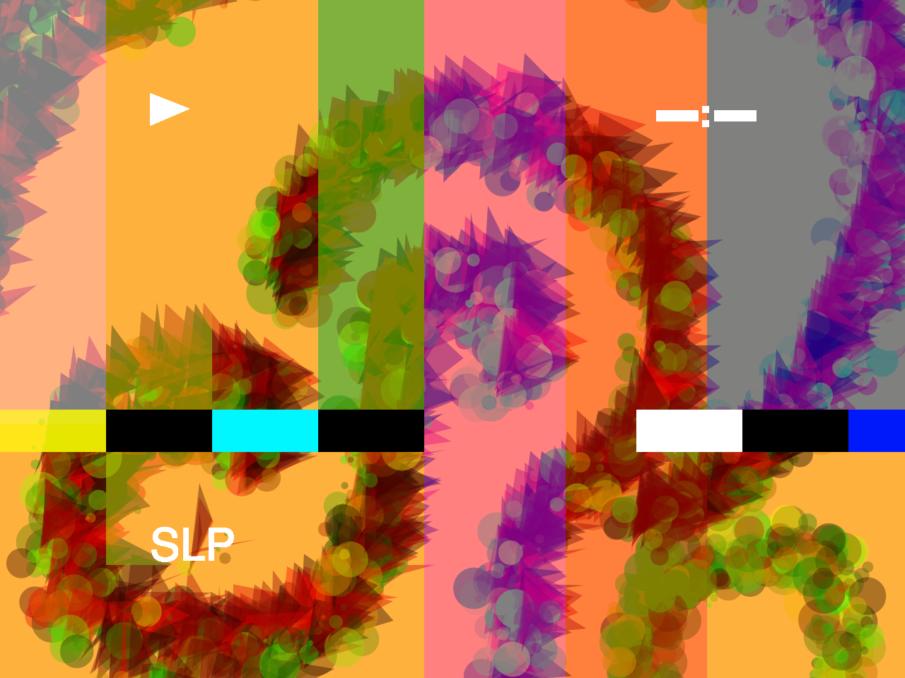

I wanted to create something that mimicked the feel of toiling with an old TV, when the connection wasn’t perfect. Pressing buttons that may or may not work, that aren’t completely straight forward. All in all, a very retro vibe. I also really wanted to play with texture and background. The opacity of the background changes, as does its relationship to each brush.
